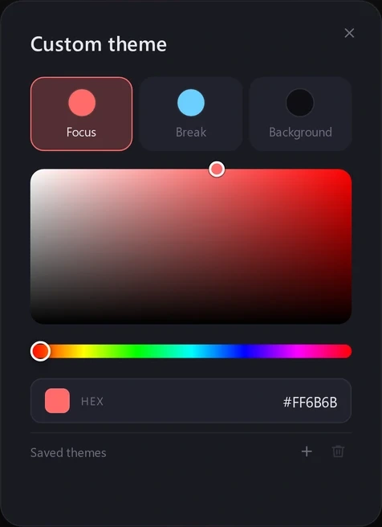

Mini Mode
Keep the countdown in sight while your notes, readings, or problem sets fill the screen. Pin the compact timer above your other windows.

Focus timer for Windows
Set aside time to focus, take a break, and keep a little timer beside whatever you’re working on.
Get it on Microsoft Store
Official film / 00:50
A focus session begins in the full timer. After a change of colour and sound, the timer shrinks over a calculus worksheet. A chime signals a break before the session statistics appear.
Cloud notification sound by akx, used under CC BY 3.0. Volume adjusted and mixed with original music.
Features
Keep the countdown in sight while your notes, readings, or problem sets fill the screen. Pin the compact timer above your other windows.

Choose your focus and break colours, set the background, and save the theme for your next session.

Settle in with brown noise, rain, or coffee shop sounds. Keep the volume low or mute them during breaks.

See where your study time went. Switch between weekly, monthly, and yearly views of your focus sessions.
Found a bug, have an idea, or need a hand with the app? Send a note directly to the developer.